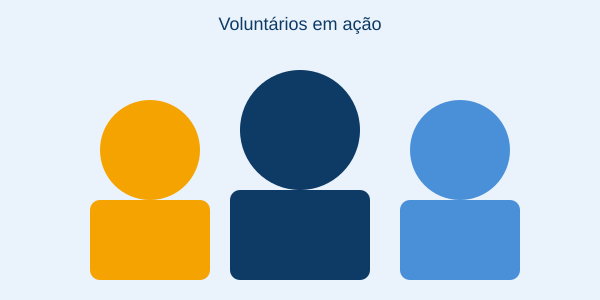

Mãos que Ajudam

Somos uma organização sem fins lucrativos dedicada a transformar vidas por meio da solidariedade, conectando doadores e voluntários a causas que fazem a diferença na comunidade de Franca e região.
Nossa Missão
Ampliar o alcance social por meio de projetos comunitários, promovendo dignidade e oportunidades para quem mais precisa, utilizando a tecnologia como ponte entre quem quer ajudar e quem precisa de ajuda.